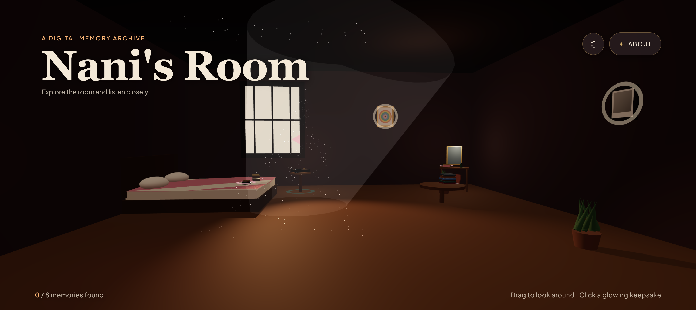
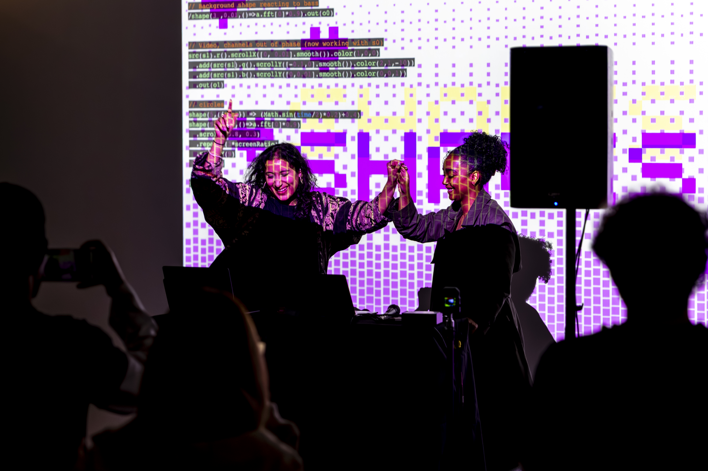
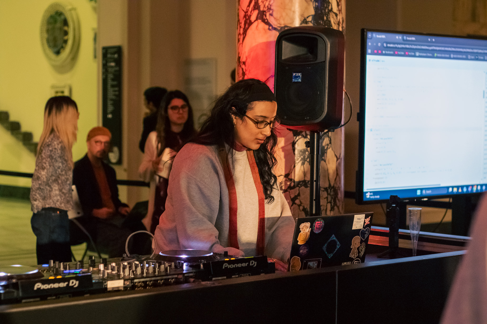

Creative Technologist
•
Live Coder
•
Content Creator
// hi im shaan aka @shapesandjapes and welcome to my portfolio! // copy this code into strudel.cc to make your first tune$:s("bd sd [bd bd] sd").bank("RolandTR808")$:s("hh*8").bank("RolandTR808")$:chord("Gm A F D").sound("sine").slow(4).voicing()

A memory game about home, personal objects and identity, inspired by my grandmother's room. Curated for the Work in Process showcase.
Music and live coding centred on Global Majority and diasporic musical cultures. We perform live-coded sets and run workshops, including Strudel beat-making.

This piece was performed during my sharing session at the Somerset House Future Artists Programme Work in Process exhibition. It combines live-coded music, visuals and spoken-word poetry to explore the feeling of time passing and the transition between seasons.
Carpet Shop, Peckham. Opening for Switch Angel, with a spoken word artist.
Corsica, London. Strudel audio set.
Copeland Gallery, Peckham. Strudel, Hydra and p5.js.
Leading and assisting creative coding and music sessions.
One-hour amapiano beat-making for Peckham Digital, with Melanated Coalition.
With Identity 2.0 at Somerset House, for the Upgrade Yourself takeover (Oct 2026). A creative reflection on our physical and digital existence. Event page ↗
A new Strudel live coding session at King's College London.
Coursework and experiments from 2022 to 2024. A few of the latest below.

Hi! I’m a creative technologist, live coder, sound artist and communications producer working across music, code, interactive media and digital culture. My practice explores technology as a tool for creative expression, cultural memory, identity and collaboration through experimental sound, audiovisual performance and interactive experiences.
Working with tools such as Strudel, Hydra, p5.js and Three.js, I explore the relationships between sound, visuals and audience participation, with a particular interest in nostalgia, diasporic cultural memory and creative technology.
Alongside my artistic practice, I work across communications, social media and digital production with Citywire, Peckham Digital and AIxDesign, developing campaigns, producing digital content and supporting community-led projects that connect technology, art and audiences.
Social Media Co-ordinator · London / Remote · shaanr@hotmail.co.uk
Social Media and Communications Coordinator with a passion for storytelling, community engagement and digital arts. Experienced in combining strong writing and editing with visual design to deliver impactful communications, coordinate events and tailor content to widen audience reach and participation.
shaanr@hotmail.co.uk
© 2026 Created by Shaan K Rehsi